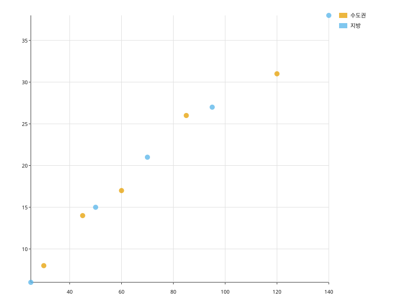
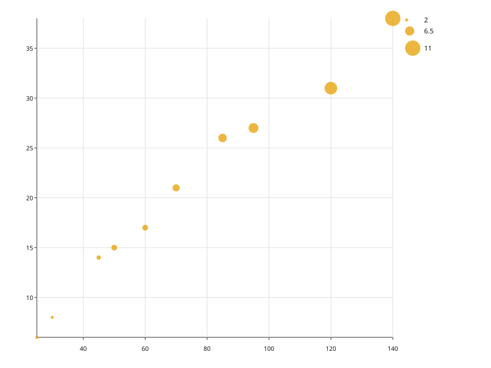

x·y 두 수치 컬럼을 점으로 놓는다. hue= 는 색, size= 는 마커 크기에 매핑한다.
import svgplot as sp
STORES = {
"면적": [30.0, 45.0, 60.0, 85.0, 120.0, 25.0, 50.0, 70.0, 95.0, 140.0],
"매출": [8.0, 14.0, 17.0, 26.0, 31.0, 6.0, 15.0, 21.0, 27.0, 38.0],
"직원수": [2.0, 3.0, 4.0, 6.0, 9.0, 2.0, 4.0, 5.0, 7.0, 11.0],
"지역": ["수도권"] * 5 + ["지방"] * 5,
}sp.scatterplot(STORES, x="면적", y="매출")
sp.scatterplot(STORES, x="면적", y="매출", hue="지역")
sp.scatterplot(STORES, x="면적", y="매출", size="직원수")LATENCY = {
"요청수": [10.0, 100.0, 1000.0, 10000.0, 100000.0],
"지연ms": [1.2, 3.0, 14.0, 130.0, 1400.0],
}
sp.scatterplot(LATENCY, x="요청수", y="지연ms", xscale="log", yscale="log")